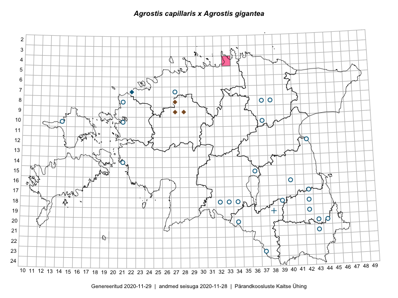

Agrostis capillaris × Agrostis gigantea — harilik kastehein × suur kastehein
Poaceae :: Agrostis capillaris × Agrostis gigantea (40)

Kaart põhineb 49 kirjel:
vaatlusi 1
herbaareksemplare 39
PKÜ kirjeid1 9
Taime kaasaegsed ja ajaloolised leiukohad asuvad 29 ruudus.
Tingmärgid ja leidudega ruutude arvud periooditi uues (u) ja 2005 andmestikus (v)
| █ | vahemik | u2 | v3 |
|---|---|---|---|
| █ | 2006–2020 | 1 | – |
| ◆/◇ | 1971–2005 | 4 | 0 |
| ○ | 1921–1970 | 23 | 0 |
| + | kuni 1920 | 1 | 0 |
| × | hävinud | – | 0 |
| ? | kaheldav | – | 0 |
| Ruut | Leidja(d) | Leiuaeg | Kirje |
|---|---|---|---|
| 04-33 | Virve Sõber, Inga Hiiesalu | 2010-07-02 | PKÜ: 16315 |
| 07-22 | Tõnu Ploompuu | 2005 | ruut/ala: Agrostis capillaris × Agrostis gigantea |
| 09-27 | Tõnu Ploompuu, Katrin Jürgens | 2001-07-20 | PKÜ: 7069 |
| 09-27 | Tõnu Ploompuu, Katrin Jürgens | 2001-07-20 | PKÜ: 7067 |
| 09-27 | Tõnu Ploompuu, Katrin Jürgens | 2001-07-20 | PKÜ: 7068 |
| 09-27 | Tõnu Ploompuu, Katrin Jürgens | 2001-07-19 | PKÜ: 7063 |
| 09-28 | Tõnu Ploompuu, Katrin Jürgens | 2001-07-19 | PKÜ: 7066 |
| 09-27 | Tõnu Ploompuu, Katrin Jürgens | 2001-07-19 | PKÜ: 7062 |
| 08-27 | Tõnu Ploompuu, Katrin Jürgens | 2001-07-18 | PKÜ: 7052 |
| 08-27 | Tõnu Ploompuu, Katrin Jürgens | 2001-07-18 | PKÜ: 7053 |
| 17-42 | M. Kask | 1968-06-26 | TAA0062573: Agrostis capillaris × Agrostis gigantea |
| 17-42 | M. Kask | 1968-06-26 | TAA0062574: Agrostis capillaris × Agrostis gigantea |
| 20-34 | M. Kask | 1965-08-28 | TAA0062579: Agrostis capillaris × Agrostis gigantea |
| 20-34 | M. Kask | 1965-08-28 | TAA0062580: Agrostis capillaris × Agrostis gigantea |
| 16-40 | 1965-08-22 | TAA0062568: Agrostis capillaris × Agrostis gigantea | |
| 20-44 | Liivia Laasimer | 1965-07-14 | TAA0062569: Agrostis capillaris × Agrostis gigantea |
| 12-42 | Linda Viljasoo | 1964-07-27 | TAA0062543: Agrostis capillaris × Agrostis gigantea |
| 12-42 | Linda Viljasoo | 1964-07-27 | TAA0062544: Agrostis capillaris × Agrostis gigantea |
| 10-14 | Linda Viljasoo | 1964-07-10 | TAA0062557: Agrostis capillaris × Agrostis gigantea |
| 18-42 | R. Lauba | 1963-08-01 | TAA0062566: Agrostis capillaris × Agrostis gigantea |
| 14-21 | V. Hein | 1962-08-19 | TAA0062570: Agrostis capillaris × Agrostis gigantea |
| 20-43 | K. Pork | 1960-08-06 | TAA0062549: Agrostis capillaris × Agrostis gigantea |
| 21-43 | K. Pork | 1960-08-06 | TAA0062551: Agrostis capillaris × Agrostis gigantea |
| 07-27 | H. Karu | 1960-07-13 | TAA0062558: Agrostis capillaris × Agrostis gigantea |
| 07-27 | H. Karu | 1960-07-13 | TAA0062559: Agrostis capillaris × Agrostis gigantea |
| 08-21 | Agnes Ojaveer, Visolde Puusepp | 1960-07-09 | TAA0062552: Agrostis capillaris × Agrostis gigantea |
| 10-21 | Linda Viljasoo | 1960-07-08 | TAA0062554: Agrostis capillaris × Agrostis gigantea |
| 19-42 | M. Kask | 1960-06-15 | TAA0062548: Agrostis capillaris × Agrostis gigantea |
| 19-42 | M. Kask | 1960-06-15 | TAA0062556: Agrostis capillaris × Agrostis gigantea |
| 18-34 | Linda Viljasoo | 1959-08-14 | TAA0062567: Agrostis capillaris × Agrostis gigantea |
| 18-34 | Linda Viljasoo | 1959-08-13 | TAA0062546: Agrostis capillaris × Agrostis gigantea |
| 18-33 | Linda Viljasoo | 1959-08-10 | TAA0062571: Agrostis capillaris × Agrostis gigantea |
| 18-33 | Linda Viljasoo | 1959-08-10 | TAA0062576: Agrostis capillaris × Agrostis gigantea |
| 18-34 | Linda Viljasoo | 1959-08-06 | TAA0062581: Agrostis capillaris × Agrostis gigantea |
| 18-32 | Linda Viljasoo | 1959-08-04 | TAA0062561: Agrostis capillaris × Agrostis gigantea |
| 18-32 | Linda Viljasoo | 1959-08-04 | TAA0062562: Agrostis capillaris × Agrostis gigantea |
| 18-32 | Linda Viljasoo | 1959-08-04 | TAA0062563: Agrostis capillaris × Agrostis gigantea |
| 18-32 | Linda Viljasoo | 1959-08-04 | TAA0062564: Agrostis capillaris × Agrostis gigantea |
| 18-32 | Linda Viljasoo | 1959-08-04 | TAA0062582: Agrostis capillaris × Agrostis gigantea |
| 18-32 | Linda Viljasoo | 1959-08-04 | TAA0062583: Agrostis capillaris × Agrostis gigantea |
| 15-36 | Linda Viljasoo, K. Pork | 1959-07-29 | TAA0062547: Agrostis capillaris × Agrostis gigantea |
| 15-36 | K. Pork, Linda Viljasoo | 1959-07-29 | TAA0062553: Agrostis capillaris × Agrostis gigantea |
| 18-39 | A. Mäemets | 1958-06-14 | TAA0062550: Agrostis capillaris × Agrostis gigantea |
| 23-37 | Linda Viljasoo | 1957-08-09 | TAA0062575: Agrostis capillaris × Agrostis gigantea |
| 15-36 | K. Pork | 1956-08-08 | TAA0062555: Agrostis capillaris × Agrostis gigantea |
| 08-38 | S. Kask | 1956-08-05 | TAA0062565: Agrostis capillaris × Agrostis gigantea |
| 08-37 | Linda Viljasoo | 1956-08-03 | TAA0062577: Agrostis capillaris × Agrostis gigantea |
| 10-37 | M. Kask | 1956-08-01 | TAA0062572: Agrostis capillaris × Agrostis gigantea |
| 19-38 | Kierulff | TAA0062545: Agrostis capillaris × Agrostis gigantea |
Pärandkoosluste Kaitse Ühingu (PKÜ) andmebaas sisaldab inventeeritud koosluste kirjeldusi ja liigiloendeid. Kõige enam on andmeid niidutaimede kohta.↩︎
Ruutude arv uue atlase andmekogu järgi. Muuhulgas arvestab vanemat herbaariumi, 2005. aasta atlase välitöölehtedelt uuesti digitaliseeritud andmeid jne. Uue atlase andmekogust pärinevad andmed on kaardile kantud siniste sümbolitega.↩︎
Ruutude arv 2005. aasta atlase (Kukk, T., Kull, T., Eesti taimede levikuatlas. Eesti Maaülikool, Põllumajandus- ja Keskkonnainstituut, Tartu, 2005) järgi. Andmeallikana on kasutatud levik.exe programmi, kus igas ruudus on registreeritud vaid uusim leid. Seetõttu on vanemate perioodide kohta andmed puudulikud. Kasutatud levik.exe andmestikus leidub mõningaid kõrvalekaldeid atlase trükis ilmunud versioonist, sagedamini tarnade ja käpaliste seas. Lisaks leidub selles andmestikus valik liike (peamiselt väheste leidudega tulnuktaimed), mille kaarte trükis ei avaldatud. Vana atlase andmed ruutudest, milles ei ole uue atlase andmekogus leide enne 2006. aastat, on kaardil esitatud punaste sümbolitega. Vana atlase andmetel hävinud ja kaheldavaid leiukohti pole hilisemate (taas)leidude põhjal korrigeeritud.↩︎